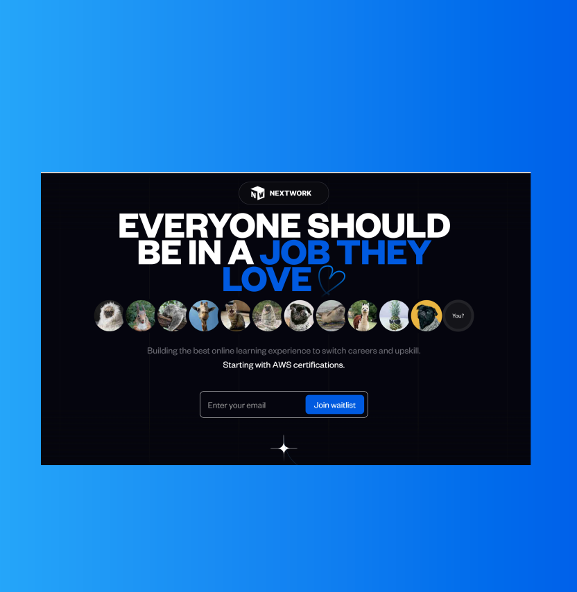
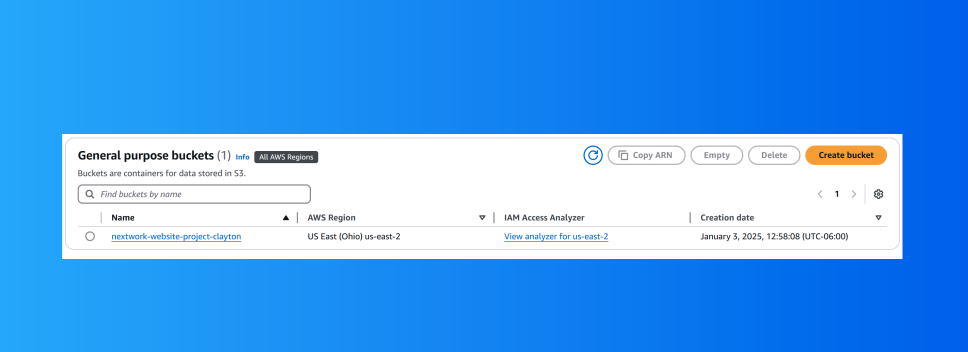
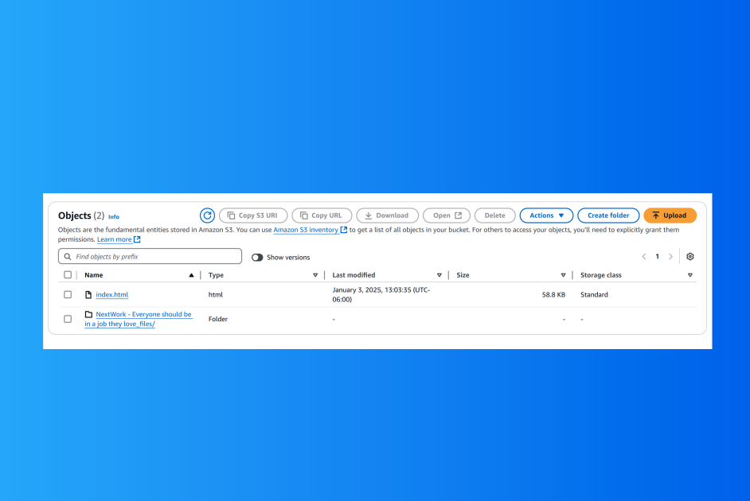
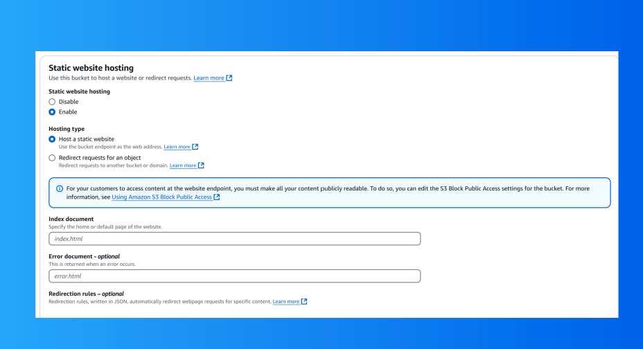
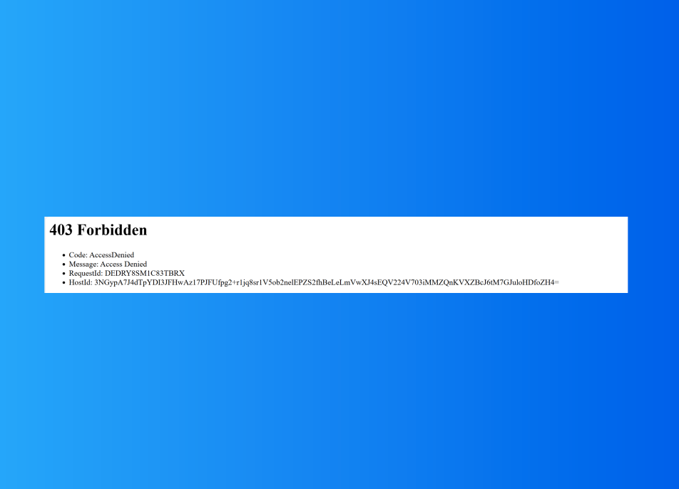

Gallery





×

The static website was successfully deployed and accessible via the S3 bucket's endpoint URL. This project strengthened my understanding of AWS services and demonstrated my ability to apply cloud-based solutions effectively.